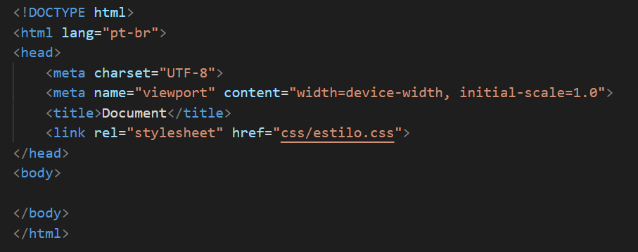

Seja bem-vindo, para começar deve ser feito um arquivo que será nomeado de index.html aonde criaremos nosso site, e duas pastas, uma nomeada de img aonde guardaremos as nossas imagens, e outra pasta nomeada de css aonde ficara o arquivo css que ira estilizar o nosso site.
Após a criação das pastas e arquivos, dentro de index.html, você deverá colocar estes comandos.
Após terminar você terá um arquivo html conectado a um arquivo css que irá estilizá-lo da forma que você desejar.